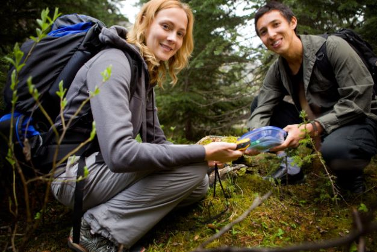
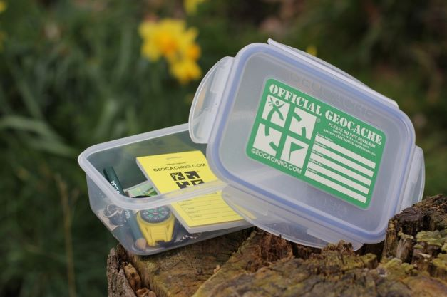

Our team
We're a group of young people who are fascinated by Geocaching idea. The group is established in the North of Poland, in the city of Gdańsk. We're meeting once a month, for a purpose of creating a new geocache spots, explore together well-hidden geocaches or to talk about everyday life! If you're from our neighbourhood learn more about our meetings HERE. Otherwise, maybe it's a sign to start your fan group in your own country? CONTACT with us if you wish for some tips!

In action
Our team members while putting one more new geocache in the neighbourhood of our city. Can you find the localisation? :)

New cache
That's a geocache you might discover in your neighbourhood or prepare for other geocachers!